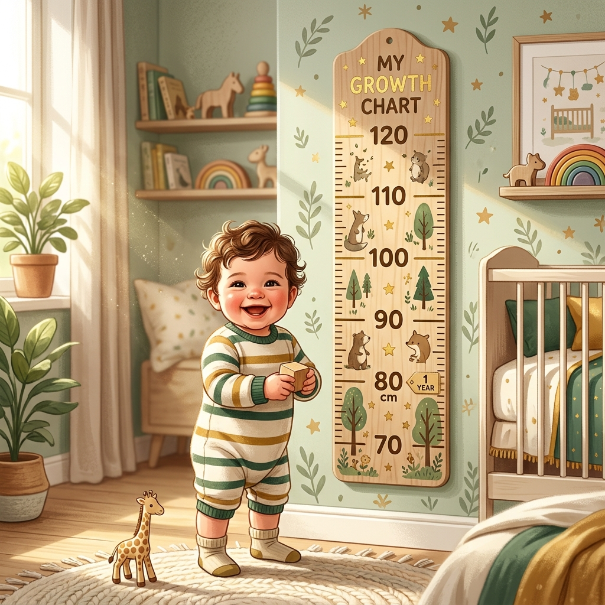
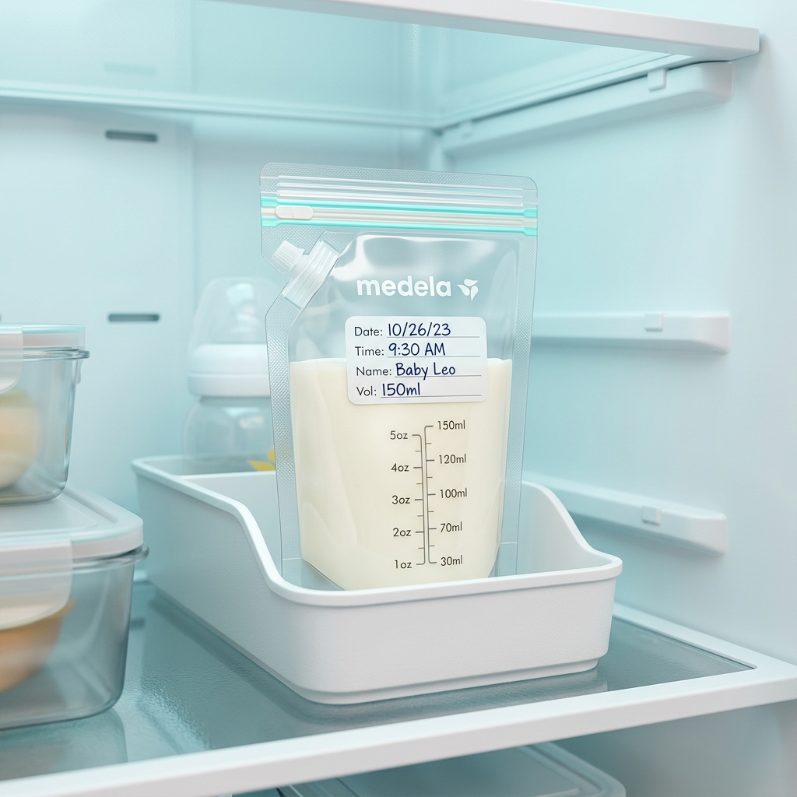

Chương 5: Vắt Trữ Sữa, Theo Dõi Cân Nặng & Đi Làm Trở Lại

📖 Trang 18 - 22 • ⏱️ Thời gian đọc: ~6 phút • 🏷️ Độ khó: Trung bình (Intermediate)

Tóm tắt trong một câu: Làm chủ quy trình vắt trữ sữa mẹ khoa học và hiểu đúng về các yếu tố tăng trưởng toàn diện của trẻ giúp người mẹ tự do tái hòa nhập xã hội và công việc công sở mà không làm gián đoạn nguồn sữa vô giá cho con. Ch 5, p. 18-22
🔍 Bối cảnh (The Setup):
Áp lực tâm lý của các bà mẹ khi chuẩn bị quay trở lại làm việc sau kỳ nghỉ thai sản, lo sợ bị mất sữa do khoảng cách xa con, kết hợp với nỗi lo lắng triền miên khi so sánh cân nặng của con mình với các bé bú sữa công thức.
💡 Luận điểm chính (The Argument):
Sữa mẹ có thể được bảo quản lạnh an toàn mà không làm mất đi các giá trị kháng thể sinh học cốt lõi. Mẹ đi làm hoàn toàn duy trì được nguồn sữa bằng cách kết hợp vắt sữa và cho bú trực tiếp khi về nhà. Sự tăng cân của bé cần được đánh giá tổng thể thay vì chỉ nhìn vào số đo cân nặng hằng tuần.
📊 Bằng chứng hỗ trợ (The Evidence):
Bảng thời gian trữ sữa khoa học (phòng: 6-8 tiếng, tủ lạnh: 72 tiếng, ngăn đông: 3 tháng); dữ liệu chứng minh doanh nghiệp có lợi nhuận cao hơn khi hỗ trợ mẹ sữa (giảm ngày nghỉ của nhân viên); biểu đồ cân nặng chỉ là chỉ dẫn xu hướng sức khỏe tổng quát. Ch 5, p. 18-22
🚀 Hệ quả thực tế (The Implications):
Người mẹ chủ động trao đổi với người sử dụng lao động để thiết lập thời gian nghỉ vắt sữa hằng ngày. Áp dụng quy trình rã đông từng lượng nhỏ (~50ml) để tránh lãng phí sữa dư. Từ bỏ việc so sánh cân nặng của con với trẻ bú sữa bột.
⚖️ Điểm tranh biện (The Controversy):
Khoảng trống pháp lý về quyền lợi thai sản ở nhiều quốc gia khiến việc vắt sữa tại nơi làm việc trở thành rào cản lớn với phụ nữ có thu nhập thấp. Sự khác biệt về đường cong tăng trưởng giữa trẻ bú sữa mẹ (tăng chậm hơn ở giai đoạn sau) và trẻ bú bình sữa bột.
🔗 Mối liên kết (The Connection):
Chương cuối cùng hoàn thiện bức tranh nuôi con bằng sữa mẹ bằng cách chuyển đổi từ các kỹ năng kỹ thuật trực tiếp tại nhà (khớp ngậm, tư thế) sang quản lý nguồn sữa trong môi trường xã hội và công việc thực tế.
• Phân tách chất béo tự nhiên: Khi trữ lạnh sữa mẹ, phần chất béo (lipids) nhẹ hơn sẽ nổi lên mặt. Đây không phải dấu hiệu sữa bị hỏng mà là hiện tượng vật lý bình thường. Chỉ cần lắc nhẹ bình để hòa tan lại chất béo. Ch 5, p. 19
• Vai trò của Enzyme Lipase: Lipase giúp tự phân giải chất béo thành các axit béo tự do để bé dễ hấp thụ. Khi trữ lạnh, hoạt động này vẫn tiếp tục tạo ra mùi kim loại hoặc mùi xà phòng nhẹ. Sữa hoàn toàn an toàn cho bé bú.
• Cảnh báo về Nhiệt độ cao: Sử dụng nhiệt độ cao hoặc lò vi sóng làm biến tính các kháng thể sinh học quý giá và tạo ra các điểm nóng nguy hiểm gây bỏng miệng bé. Ch 5, p. 19
• Lợi ích kép cho Doanh nghiệp: Nghiên cứu kinh tế y tế chứng minh rằng việc doanh nghiệp tạo điều kiện cho mẹ vắt sữa (phòng vắt sữa, tủ lạnh, thời gian nghỉ) giúp giảm đáng kể tỷ lệ nghỉ việc của cha mẹ do trẻ bú mẹ có hệ miễn dịch tốt hơn và ít đau ốm hơn. Ch 5, p. 21
• Xu hướng lập pháp hiện đại: Nhiều quốc gia đã luật hóa quyền được nghỉ vắt sữa (15-20 phút mỗi 3-4 tiếng) cho phụ nữ đang nuôi con dưới 12 tháng tuổi nhằm thúc đẩy bình đẳng giới tại nơi làm việc.
• Giải phóng không gian: Sữa mẹ có tính chất di động linh hoạt cao, giúp người mẹ không bị bó buộc không gian sinh hoạt tại nhà, thúc đẩy sức khỏe tinh thần. Ch 5, p. 20
Biểu đồ tăng trưởng tiêu chuẩn của Tổ chức Y tế Thế giới (WHO) được xây dựng dựa trên dữ liệu từ trẻ em bú mẹ hoàn toàn, được nuôi dưỡng trong môi trường lành mạnh không khói thuốc. Đường cong này phản ánh xu hướng tăng trưởng tự nhiên: trẻ bú mẹ tăng cân nhanh trong 2-3 tháng đầu, sau đó chậm dần và thon gọn hơn. Ngược lại, trẻ bú sữa công thức thường tăng trưởng tuyến tính đều đặn do hấp thụ năng lượng cao từ sữa bò tinh chế. Việc áp chuẩn cân nặng sữa công thức lên trẻ bú mẹ gây ra nỗi lo âu thừa thãi và sai lệch cho cha mẹ. Ch 5, p. 22
• Quan điểm chủ đạo: Trẻ phải tăng cân liên tục, đều đặn hằng tuần theo các biểu đồ tiêu chuẩn chung. Bất kỳ sự chững cân hay tăng chậm nào cũng được coi là dấu hiệu "sữa mẹ loãng", "thiếu sữa" và cần dặm sữa công thức ngay lập tức.
• Cơ sở thực tế: Quan niệm cũ của cộng đồng và các chiến dịch quảng cáo sữa bột định hình tiêu chuẩn trẻ sơ sinh phải mập mạp, nhiều ngấn.
• Hệ quả tiêu cực: Người mẹ lo âu tột độ, kích hoạt hormone Adrenaline gây tắc phản xạ xuống sữa. Việc dặm thêm sữa công thức cắt giảm cữ bú trực tiếp của bé, trực tiếp gây suy giảm lượng sữa mẹ thực tế. Ch 5, p. 22
• Quan điểm chủ đạo: Cân nặng chỉ là một chỉ số động. Tốc độ tăng trưởng của trẻ bú sữa mẹ khác biệt hoàn toàn so với trẻ bú bình. Cần đánh giá tổng hòa các yếu tố: chiều cao, tã ướt, thần thái lanh lợi và gen gia đình.
• Cơ sở khoa học: Nghiên cứu của Tổ chức Y tế Thế giới (WHO) về đường cong tăng trưởng của trẻ bú sữa mẹ hoàn toàn và khuyến cáo của Hiệp hội Úc (ABA). Ch 5, p. 22
• Ưu điểm: Giải phóng người mẹ khỏi stress tâm lý, duy trì phản xạ Oxytocin tự nhiên giúp sữa chảy dồi dào, tôn trọng cơ chế tự điều chỉnh năng lượng của trẻ.
Tuyệt đối không so sánh cân nặng của trẻ bú mẹ với trẻ bú sữa công thức. Hãy sử dụng Biểu đồ tăng trưởng dành riêng cho trẻ bú mẹ của WHO. Đánh giá sức khỏe của bé dựa trên xu hướng dài hạn (mỗi tháng một lần), kết hợp sự phát triển chiều cao, mức độ linh hoạt của bé và số lượng tã ướt thải ra hằng ngày. Chỉ can thiệp khi có khuyến nghị từ y tá/chuyên gia y tế nhi khoa chuyên sâu. Ch 5, p. 22
• Sự biến đổi chất lượng: Sách khuyên trữ đông sữa lên tới 6-12 tháng Ch 5, p. 18, nhưng thực tế sữa mẹ biến đổi động theo độ tuổi của bé. Sữa vắt lúc bé 1 tháng tuổi không đáp ứng tối ưu nhu cầu dinh dưỡng của bé lúc 6 tháng.
• Mùi xà phòng khó chịu: Trữ đông lâu ngày kích hoạt enzyme Lipase phân giải chất béo liên tục, tạo ra mùi xà phòng nồng nặc khiến nhiều bé từ chối bú sữa trữ đông.
• Suy giảm kháng thể: Dù nhiệt độ cực lạnh giữ sữa không bị hỏng, nhưng số lượng kháng thể sống tự nhiên (IgA, IgG) trong sữa trữ đông lâu ngày bị suy giảm đáng kể so với sữa mẹ bú trực tiếp.
• Tính lý thuyết cao: Lời khuyên vắt sữa tại chỗ làm hay gửi trẻ gần công sở Ch 5, p. 21 mang tính đặc quyền, chỉ khả thi với lao động văn phòng ở các công ty lớn có điều kiện cơ sở vật chất tốt.
• Rào cản thực tế: Đối với nữ công nhân nhà máy, nhân viên dịch vụ hoặc lao động tự do, việc tiếp cận tủ lạnh sạch, phòng vắt sữa kín đáo và có 3 cữ nghỉ 20 phút hằng ngày là hoàn toàn bất khả thi.
• Giải pháp thay thế: Cần có sự điều chỉnh thực tế: tập trung cho bé bú trực tiếp tối đa khi ở nhà (sáng sớm, tối và đêm) và chấp nhận dặm thêm sữa công thức ban ngày nếu không thể vắt trữ sữa tại nơi làm việc.
Sách khuyên rã đông bằng cách ngâm chén nước ấm nhưng không nêu rõ nhiệt độ giới hạn Ch 5, p. 19. Nhiều cha mẹ có thói quen ngâm sữa vào nước nóng (>50-60°C) để sữa nhanh ấm cho bé bú gấp. Nhiệt độ cao này ngay lập tức làm đông vón và phá hủy cấu trúc của các protein bảo vệ như Lactoferrin, Lysozyme và kháng thể IgA sống trong sữa mẹ. Nhiệt độ chén nước ngâm rã đông và làm ấm sữa tuyệt đối không được vượt quá 40°C để bảo toàn nguyên vẹn giá trị miễn dịch sinh học vô giá của sữa mẹ.
Đảm bảo bạn nắm vững các kiến thức sau trước khi kết thúc học phần nuôi con bằng sữa mẹ:
• Level 1 & 2: Nhớ & Hiểu
Hãy nêu các mốc nhiệt độ và thời gian tối đa để trữ sữa mẹ an toàn trong ngăn mát và ngăn đông tủ lạnh. Tại sao chất béo phân tách nổi lên mặt sữa và cần xử lý thế nào trước khi cho bé bú? Ch 5, p. 18, 19
• Level 3 & 4: Áp dụng & Phân tích
Giải thích quy trình rã đông sữa mẹ đông đá an toàn. Tại sao lò vi sóng bị cấm dùng để rã đông hoặc hâm nóng sữa mẹ và nhiệt độ chén nước ngâm hâm sữa lý tưởng là bao nhiêu? Ch 5, p. 19
• Level 5 & 6: Đánh giá & Sáng tạo
Phân tích lý do tại sao trẻ bú sữa mẹ có tốc độ tăng trưởng cân nặng khác biệt so với trẻ bú sữa công thức. Thiết kế một lịch trình vắt sữa tại nơi làm việc kết hợp cho bú trực tiếp tại nhà để duy trì sữa lâu dài. Ch 5, p. 21, 22
"Nỗi sợ hãi và ám ảnh khi thấy con tăng cân chậm hơn các bé khác xuất phát từ các dấu hiệu sinh lý học bất ổn thực tế của bé, hay từ mong muốn sâu thẳm của bạn về sự tự khẳng định năng lực làm mẹ trước ánh mắt phán xét của gia đình và xã hội?" Ch 5, p. 22
"Khi chuẩn bị đi làm lại, cảm giác áy náy, tội lỗi vì phải rời xa con ban ngày là sự thiếu an toàn khách quan của bé, hay do bạn đang chịu ảnh hưởng bởi định kiến xã hội rằng 'người mẹ hoàn hảo phải hy sinh toàn bộ sự nghiệp để ở bên con'?" Ch 5, p. 20, 21
"Làm thế nào để bạn giải phóng mình khỏi áp lực của chiếc cân cơ học để nhìn thấy và tận hưởng sự lanh lợi, những nụ cười và cột mốc vận động tự nhiên của con bạn mỗi ngày?" Ch 5, p. 22